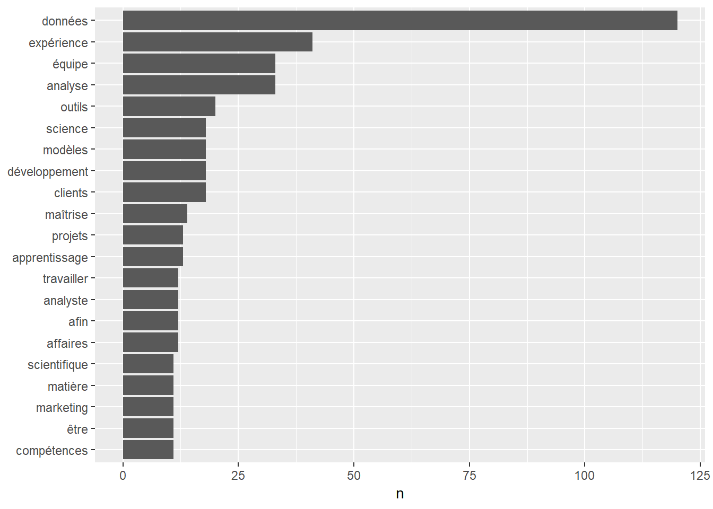
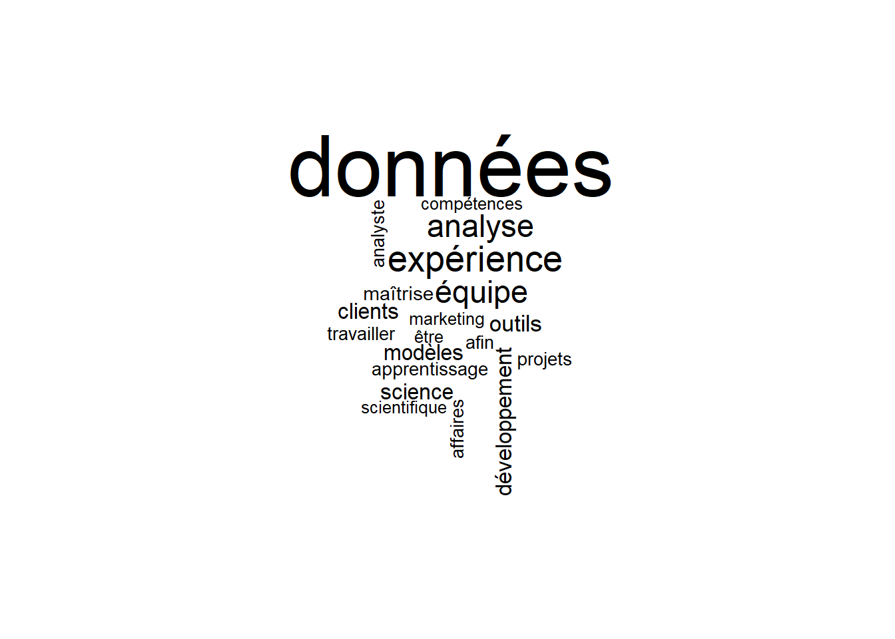
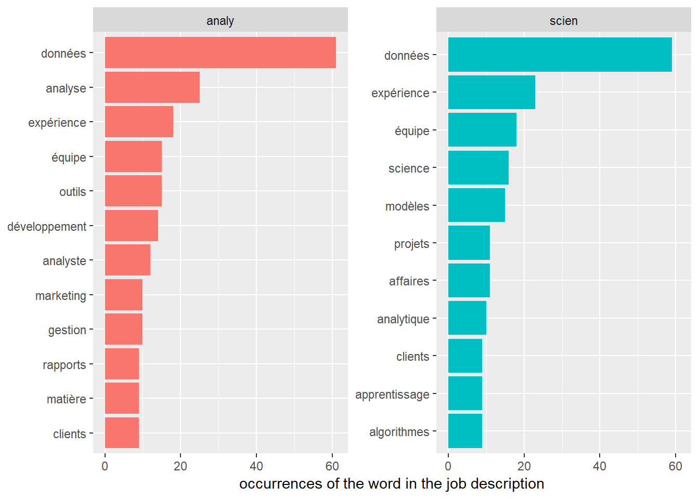

Chapter 4 text mining
knitr::opts_chunk$set(warning=FALSE, message=FALSE, include=TRUE)DATASET_DIRECTORY <- "/DATASETS/job_posting_cleansed/"4.1 Occurence of words
This notebook provides a good example of how we can apply some basic functions from the package https://www.tidytextmining.com/tidytext.html in order to quantify and compare the text of job positions. Here we picked a sample of 10 job offers posted on the web for two type of positions: data analyst and data scientist. Some of the descriptions were only available in french therefore I transltated the others from english to french using google translate.
4.1.1 Proof of concept
notes about Tidytext with french content
The Tidytext package does not implement directly all the features to interpret the ’ character in french. This was about to be implemented but finally Julia decided to not move forward with the idea (https://github.com/juliasilge/tidytext/pull/89). As an alternative she propose to use string functions prior to call unnest_tokens. This is far from being perfect (because it split words like aujourd’hui, prud’hommes, etc) as explained by Colin Fay (https://github.com/juliasilge/tidytext/pull/89#issuecomment-354409107).
Colin provides a package (https://github.com/ColinFay/proustr) which may implement something similar but I have not looked in depth.
d <- tibble::tibble(txt = c("C'est l'arriere-cuisine. On s'y trouve. J'ai rdv aujourd'hui au tribunal des prud'hommes"))
d <- d %>%
mutate(newtext = str_replace_all(txt, "[:punct:]", " ")) # issue with aujourd'hui & prod'hommes which are split
output <- unnest_tokens(d, word, newtext)
sw <- get_stopwords(language = "fr")
output %>%
anti_join(sw)## # A tibble: 9 x 2
## txt word
## <chr> <chr>
## 1 C'est l'arriere-cuisine. On s'y trouve. J'ai rdv aujourd'hui au ~ arriere
## 2 C'est l'arriere-cuisine. On s'y trouve. J'ai rdv aujourd'hui au ~ cuisine
## 3 C'est l'arriere-cuisine. On s'y trouve. J'ai rdv aujourd'hui au ~ trouve
## 4 C'est l'arriere-cuisine. On s'y trouve. J'ai rdv aujourd'hui au ~ rdv
## 5 C'est l'arriere-cuisine. On s'y trouve. J'ai rdv aujourd'hui au ~ aujourd
## 6 C'est l'arriere-cuisine. On s'y trouve. J'ai rdv aujourd'hui au ~ hui
## 7 C'est l'arriere-cuisine. On s'y trouve. J'ai rdv aujourd'hui au ~ tribun~
## 8 C'est l'arriere-cuisine. On s'y trouve. J'ai rdv aujourd'hui au ~ prud
## 9 C'est l'arriere-cuisine. On s'y trouve. J'ai rdv aujourd'hui au ~ hommesLa source de données originale se trouve à :
“/Users/Yannick/Google Drive/Services Right Management/CV - Resumé/étape 1 - recherche du poste visé/CLEANSED”
setwd(DATASET_DIRECTORY)
file_list <- dir()
file_list## [1] "Analyste - Science des données de fiabilité - Exo.txt"
## [2] "Analyste des données - Scientifique des données - FinDev Canada.txt"
## [3] "Analyste données clients - Aimia.txt"
## [4] "Data Analyst - MindGeek .txt"
## [5] "Data Scientist - ExPretio.txt"
## [6] "Marketing Analyst - DavidsTea.txt"
## [7] "Scientifique de données - Aviva.txt"
## [8] "scientifique des données - Sun Life Financial.txt"
## [9] "Scientifiques de données – Analytique Clients - Banque Nationale.txt"
## [10] "Scientifiques des données juniors - Ericsson.txt"4.1.2 pattern matching to extract the position and the company name
resume_df <- data_frame(filename = str_to_lower(file_list))
companyPattern = '- ([^-]*).txt$' # starting from the end of the string, look for the last '-' and following characters which contain the company name
str_view(resume_df$filename, companyPattern) # check the matching patterncompanies <- str_trim(str_match(resume_df$filename, companyPattern)[,2]) # matches the pattern and retrieve only the group capture
positionPattern = '(scien|analy)' # maches any of the first word containing eitehr scien (for data science) or analy (for data analyst)
str_view(resume_df$filename, positionPattern)positions <- str_match(resume_df$filename, positionPattern)[,2]4.1.3 Ingest & transform all the files using tidytext
setwd(DATASET_DIRECTORY)
stopWordsForFrench <- get_stopwords(language = "fr")
for (i in 1:length(file_list)) {
temp_text <- read_lines(file_list[i])
text1 <- str_replace_all(temp_text, "[:punct:]", " ")
temp_df <- data_frame(text = text1, company = companies[i], position = positions[i])
output <- unnest_tokens(temp_df, word, text)
output1 <- output %>%
anti_join(stopWordsForFrench)
if (i == 1) df <- output1 else df <- rbind(df, output1)
}4.1.4 Visualization - global
df %>%
count(word, sort = TRUE) %>%
filter(n > 10) %>%
mutate(word = reorder(word, n)) %>%
ggplot(aes(word, n)) +
geom_col() +
xlab(NULL) +
coord_flip()
df %>%
count(word) %>%
with(wordcloud(word, n, max.words = 20))
4.1.5 Analysis by position Analyst vs Data scientist
df %>%
group_by(position, word) %>%
summarise(n = n()) %>%
filter(n > 8) %>%
ungroup() %>% # if we do not do that the reorder function does not work
mutate(word = reorder(word, n)) %>%
ggplot(aes(word, n, fill = position)) +
geom_col(show.legend = FALSE) +
facet_wrap(~position, scales = "free_y") +
labs(y = "occurrences of the word in the job description",
x = NULL) +
coord_flip()